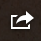
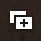
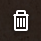

Using the Document Browser
The Document Browser is for browsing and managing your documents; you can make a new graph, preview existing graphs, and share, duplicate, or delete your files. You can also import and export graphs from remote servers, and set up OmniPresence file syncing to keep documents up to date between all versions of OmniGraphSektcher. To enter the Document Browser while viewing a graph, press the Documents button on the toolbar.
To create a new graph, tap the New Document (+) button in the toolbar.
To browse existing graphs, swipe up or down over your documents.
Graphs can be ordered based on when you last worked on them (from newest to oldest), or alphabetically by title (from A to Z). Tap the switch in the bottom toolbar to choose the sort order.
To import a graph from a remote location, tap Local Documents and choose Cloud Setup. From here you can create a new account or access an existing account for remote storage or syncing (see the next page for more on OmniPresence sync). To create or access existing Omni Sync Server or WebDAV storage, choose the Import/Export option when setting up your account.
Once connected, your remote storage will be available to browse and import documents under Import in the toolbar title. If you decide to start syncing on this account as well, just return to Cloud Setup and tap the account name to switch from Import/Export to Both.
The Document Browser displays several graph previews at a time. When a graph is visible, there are several actions available:
To open a graph, just tap the graph preview.
To do other tasks, first tap Edit in the toolbar and then tap the graphs you want to handle. With a graph selected, the functions below are available in the toolbar:

Tap Share to send via Mail and email your graph; export to send a copy of your graph to your Omni Sync Server account, a WebDAV server, or iTunes; copy as image to copy the graph as an image to paste elsewhere; send to photos to save the graph as an image to Photos; or print to print.

Tap Duplicate to make a copy of this graph. Cloning will add another document, exactly like this one, to your list.

Tap Delete to delete. Deleted items move to the Trash folder, accessible from the toolbar title, where they live until it's emptied. If you're missing a file you intended to keep, check here!
Tap the gear button in the toolbar to send feedback, see what's new, or browse the help (but you already know that).